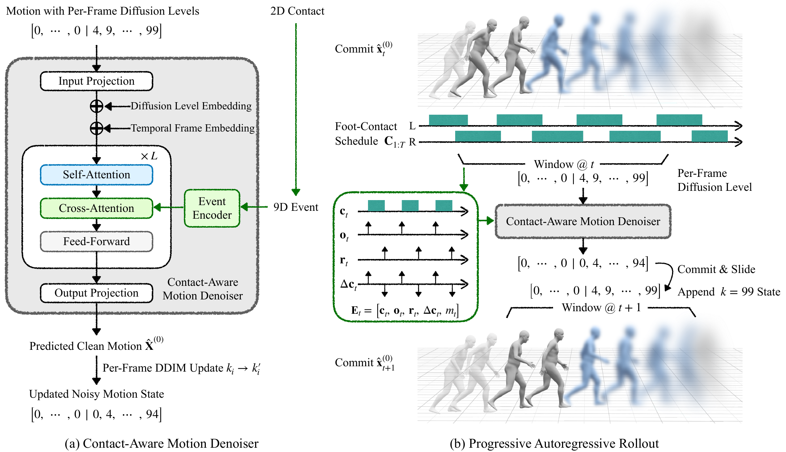

WACV 2027
Seoul National University
Controllable human motion generation has largely focused on specifying what action should occur or where the body should move. We study a complementary question: can full-body motion be controlled by specifying only when each foot contacts the ground? StepControl is an autoregressive diffusion model conditioned on a future binary left/right foot-contact schedule, without requiring target root and body poses or semantic prompts. It represents contact as explicit temporal events and injects them through dedicated cross-attention with classifier-free guidance. A stochastic mixture noise schedule and rollout warmup support stable long-horizon generation. StepControl follows prescribed contact timing over long rollouts and responds to edited schedules including cadence changes, stop-and-go pauses, limping gaits, and bilateral jumping.

StepControl is an autoregressive diffusion model that generates motion from a short observed prefix and a future foot-contact schedule. (1) Event-aware contact: binary left/right contacts are expanded with onset, release, temporal change, and validity signals. (2) Dedicated conditioning: motion tokens attend to contact tokens at every Transformer layer, and classifier-free guidance controls adherence at inference. (3) Progressive rollout: a mixture noise schedule trains the denoiser for sliding-window generation, and a short warmup initializes the first rollout window.
We compare raw StepControl (without post-optimization) against spatial-trajectory baselines DART and ARDY, adapted to foot-contact constraints under identical timing conditioning. ARDY is visualized with its native mesh configuration.
Expressive, rhythmic contact patterns generated without text or audio guidance.
Low-frequency stepping schedule with lengthened single-stance duration.
Locomotion interleaved with standstill periods, requiring precise stance locking and resumption.
Simultaneous release, airborne phase, and coordinated two-foot landing.
Asymmetric left/right stance durations requiring non-uniform gait timing.
Continuous 20-second rollouts from short observed prefixes, comparing raw StepControl with StepControl + Opt., a lightweight stance-foot velocity correction. All StepControl motions in the baseline comparisons above are raw generations.
@inproceedings{stepcontrol2027,
author = {Jang, Hojun and Bae, Jinseok and Lim, Donggeun and Kim, Taesun and Jeong, Seungbin and Lee, Younghwan and Kim, Yong Seok and Kim, Young Min},
title = {StepControl: Long-Horizon Human Motion Generation from Foot-Contact Schedules},
booktitle = {Proceedings of the Winter Conference on Applications of Computer Vision (WACV)},
year = {2027}
}